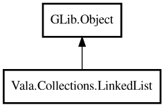

LinkedList
Object Hierarchy:

Description:
public class LinkedList<T> : Object
A doubly-linked list that supports efficient insertion and removal at both ends.
LinkedList provides O(1) addFirst/addLast and removeFirst/removeLast. It can be used as a queue, stack, or deque. Inspired by Java's
LinkedList and Go's container/list.
For element comparison in methods like contains() and indexOf(), pass an equality function to the constructor. For string lists, use
GLib.str_equal.
Example:
var list = new LinkedList<string> (GLib.str_equal);
list.addLast ("a");
list.addLast ("b");
list.addFirst ("z");
assert (list.peekFirst () == "z");
assert (list.peekLast () == "b");
assert (list.size () == 3);
Content:
Creation methods:
Methods:
- public T @get (int index)
Returns the element at the specified index. Returns null if the index
is out of bounds.
- public void addFirst (owned T element)
Adds an element to the front of the list.
- public void addLast (owned T element)
Adds an element to the end of the list.
- public void clear ()
Removes all elements from the list.
- public bool contains (T element)
Returns whether the list contains the specified element. Uses the
equality function provided in the constructor, or pointer equality if none was provided.
- public void forEach (owned ConsumerFunc<T> func)
Applies the given function to each element in the list, from first to
last.
- public int indexOf (T element)
Returns the index of the first occurrence of the specified element.
Returns -1 if the element is not found. Uses the equality function provided in the constructor, or pointer equality if none was
provided.
- public bool isEmpty ()
Returns whether the list is empty.
- public T peekFirst ()
Returns the first element without removing it. Returns null if the
list is empty.
- public T peekLast ()
Returns the last element without removing it. Returns null if the list
is empty.
- public T removeFirst ()
Removes and returns the first element. Returns null if the list is
empty.
- public T removeLast ()
Removes and returns the last element. Returns null if the list is
empty.
- public uint size ()
Returns the number of elements in the list.
- public T[] toArray ()
Returns the elements as a native array.
Inherited Members:
All known members inherited from class GLib.Object
- @get
- @new
- @ref
- @set
- add_toggle_ref
- add_weak_pointer
- bind_property
- connect
- constructed
- disconnect
- dispose
- dup_data
- dup_qdata
- force_floating
- freeze_notify
- get_class
- get_data
- get_property
- get_qdata
- get_type
- getv
- interface_find_property
- interface_install_property
- interface_list_properties
- is_floating
- new_valist
- new_with_properties
- newv
- notify
- notify_property
- ref_count
- ref_sink
- remove_toggle_ref
- remove_weak_pointer
- replace_data
- replace_qdata
- set_data
- set_data_full
- set_property
- set_qdata
- set_qdata_full
- set_valist
- setv
- steal_data
- steal_qdata
- thaw_notify
- unref
- watch_closure
- weak_ref
- weak_unref